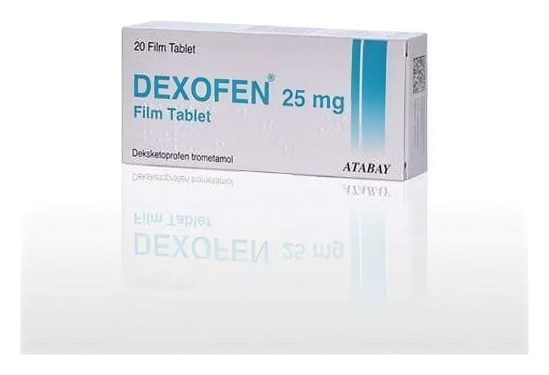

Dexofen 25 mg Film Tablet, 20 Adet

Ne için kullanılır
KT · Bölüm 1DEXOFEN, steroid olmayan antiinflamatuvar ilaçlar (NSAİİ) (iltiha p giderici) olarak adlandırılan ilaç grubundan bir ağrı kesicidir.
Osteoartrit (ekl emlerde harabi yet ve kireçlenme), romatoid artrit (iltiha bi eklem r ahatsızlığı) ve ankiloz an spondilit (daha çok omurga eklemlerinde sertleşme ile seyrede n, ağrılı ilerleyici romatizma) belirti ve bulgularının tedavisi ile akut gut artriti (gut hastalığ ına bağlı ağrılı eklem iltihabı), akut ka s iskelet sistemi ağrıları (örn. be l ağrısı), postoperatif ağrı (ameliyat sonrası ağrı) ve dismenore ( ağrılı adet dönemleri) tedavisinde endikedir.
DEXOFEN, 25 mg deksketoprofen (deksketoprofen trometamol olarak) içerir. Tabletler, beyaz renkli, yuvarlak şekilli ve çentiklidir. 20 tabletlik ambalajlar ha linde mevcuttur.
2. DEXOFEN kullanmadan önce dikkat etmeniz gerekenler
DEXOFEN’i aşağıdaki durumlarda KULLANMAYINIZ Eğer, • Deksketoprofen trometamole ve ya DEXOFEN'in içindeki yardımcı maddelerde n
herhangi birine karşı alerjiniz ( aşırı duyarlılı k) varsa; • Asetilsalisilik aside ve ya diğer steroid olmayan antiinflamatuvar ilaçlara karşı alerjiniz varsa; • Astımınız va rsa ve ya geçmişte aspirin veya diğe r steroid olmayan antiinflamatuvar ilaçlar kullandıktan sonra astım atağı, akut alerjik rinit (alerjiye bağlı burun içerisinde kısa süreli iltiha planma), burunda polip (alerjiye bağlı burun içerisinde oluşan kitlel er), ürtiker (cilt döküntüsü), alerji sonucu yüz ve boğazda şişme (yüz, gözler, duda klar veya dilde şişlik veya solunu m zorluğu) veya göğüste hırıltı (wheezing) meydana g eldiyse; • Ketoprofen (steroid olmayan anti-inflamatuvar bir ilaç) veya fibrat (ka ndaki yağı düşürmek için kullanılan bir ilaç) kullanımı sırasında fotoallerjik veya fototoksik reaksiyonlardan şikayet edi yorsanız (güneşe maruz ka lan derideki tipik kızarıklık ve benek formu; • Peptik ülser (mide-bağırsak yarası), mide ya da bağırsak ka naması ve ya sürege len sindirim sorunlarınız va rsa (örn. ha zımsızlık, göğ üste yanma) veya da ha önceden mide ya da bağırsak ka naması, ülser (mide - bağırsak yarası) veya de linme geçirdiyseniz; • Sürege len sindirim sistemi problemleriniz va rsa (örneğin, hazımsızlık, mide ekşimesi); • Ağrı ke sici olarak kullanılan steroid olmayan antiinflamatuvar ilaçların (NSAİİ) kullanımına bağlı olarak ge çmişte mide veya bağırsak ka naması veya delinmesi geçirdiyseniz; • Sürege len ilt ihaplı bağırsak hastalığ ınız (Crohn hastalığı veya ülseratif kolit) varsa;
• Ciddi ka lp yetmezliğiniz, orta veya şiddetli böbrek sorunları ve ya ciddi ka raciğe r sorunlarınız varsa; • Kanama bozukluğunuz veya kan pıht ılaşma bozukluğunuz varsa; • Kusma, ishal veya yeterli olmayan miktarda sıvı alımı ne de nlerinden dolayı şiddetli de recede d ehidrasyonunuz varsa (vücudun çok miktarda sıvı kaybı); • Hamileliğinizin üçüncü üç a ylık dönemindeyseniz ve ya e mziriyorsanız;
• Koroner arter cerrahisi (Koroner arter by- pass greft) ge çirdiyseniz, ameliyat öncesi, sırası ve sonrası ağrıların tedavisinde kullanmayınız.
DEXOFEN'i aşağı daki durumlarda DİKKATLİ KULLANINIZ Eğer, • Alerjiniz varsa veya geçmişte alerjik sorunlarınız olduysa; • Sıvı tutulumu dahil, böbrek, karaciğer veya kalp sorununuz varsa (yüksek tansiyon ve/veya kalp yetmezliği) veya bu sorunların herhangi bir tanesinden geçmişte şikayetiniz olduysa; • Diüretik (idrar söktürücü) ilaçlar alıyorsanız veya aşırı sıvı kaybı nedeniyle (örn. aşırı idrara çıkma, ishal veya kusma) sıvı eksikliği ve kan hacminde azalma sorunları yaşıyorsanız; • Kalp sorunlarınız varsa, daha önce inme geçirdiyseniz veya risk altında olduğunuzu düşünüyorsanız (örn. yüksek tansiyon, diyabet veya yüksek kolesterolünüz varsa veya sigara kullanıyorsanız) tedaviniz hakkında doktorunuza veya eczacınıza danışınız. DEXOFEN gibi ilaçlar kalp krizi riskinde (miyokard enfarktüsü) veya inme riskinde hafif artış ile ilişkilendirilebilir. Yüksek doz ve uzun süreli tedavi ile her türlü risk daha olasıdır. Önerilen dozu veya tedavi süresini aşmayınız. • Yaşlıysanız: yan etki yaşama olasılığınız daha yüksektir, (Bkz. Bölüm 4.). Bunlardan herhangi biri meyda na gelirse derhal dokt orunuza başvurunuz; • Üreme problemi olan bir kadın iseniz (DEXOFEN üremeyi olumsuz yönde
etkileyebilir, bu nedenle gebe kalma planınız varsa veya kısırlık testi yaptıracaksanız bu ilacı kullanmayınız); • Kan veya kan hücreleri yapımı bozukluğunuz varsa; • Sistemik lupus eritematozus (ciltte yaygın pullanmayla kendini gösteren bir hastalık) veya karışık bağ dokusu hastalığınız varsa (bağ dokusunu etkileyebilen bağışıklık sistemi bozuklukları); • Çok nadiren olmak üzere; eksfoliyatif dermatit (vücudun geniş bölgelerinde kızarıklık ve soyulma ile seyreden cilt rahatsızlığı), Stevens-Johnson sendromu ve toksik epidermal nekroliz (vücudun geniş bölgelerinde kızarıklık ve soyulma ile seyreden cilt rahatsızlığı) dahil bazı ölümcül ciddi deri reaksiyonları bildirilmiştir. Deri döküntüsü, mukozal lezyonlar veya başka herhangi bir aşırı duyarlılık belirtisi görüldüğü ilk anda DEXOFEN kesilmelidir. • Geçmişte iltihaplı bağırsak hastalığı geçirdiyseniz (ülseratif kolit, Crohn hastalığı); • Başka bir mide ve bağırsak hastalığınız varsa veya daha önce geçirdiyseniz; • Bir enfeksiyonunuz varsa – Lütfen aşağıdaki “Enfeksiyonlar” bölümüne bakınız; • NSAİİ’ler kanama, mide-bağırsak yarası veya delinmesi gibi ölümcül olabilecek ciddi mide-bağırsak sistemi yan etkilerine yol açarlar. Bu yan etkiler herhangi bir zamanda, önceden uyarıcı bir bulgu vererek veya vermeksizin ortaya çıkabilirler. Yaşlı hastalar ciddi mide-bağırsak sistemi yan etkileri bakımından daha yüksek risk taşımaktadırlar. • Peptik ülser veya kanama riskini arttıran ilaçlar alıyorsanız, örn; oral steroidler, bazı antidepresanlar (SSRI tipi ilaçlar (Seçici Serotonin Gerialım İnhibitörleri)), kanın pıhtılaşmasını önleyen aspirin veya varfarin gibi antikoagülan ilaçlar. Bu durumlarda, DEXOFEN almadan önce doktorunuza danışınız. Midenizi koruyucu ilave ilaçlar (örn. misoprostol veya mide asidi üretimini engelleyici ilaçlar) verebilir; • Asetilsalisilik asit ve/veya NSAİİ’lere toplumun geri kalanından daha yüksek alerji riskiniz olduğundan, asetilsalisilik asit veya diğer NSAİİ’lerin alımı sonucunda kronik rinitle beraber astım, kronik sinüzit ve/veya burun polipi şikayetiniz varsa. Bu ilacın kullanımı özellikle asetilsalisilik asit veya NSAİİ’lere alerjisi olan hastalarda, astım atakları veya bronkospazma (solunum yollarının daralması) neden olabilir. • NSAİİ'ler gibi, DEXOFEN’de bulaşıcı hastalıkların semptomlarını maskeleyebilir. Porfiriyi (cildi veya sinir sistemini etkileyen ve karın ağrısına neden olan nadir görülen bir hastalık) ve GI (sindirim sistemi) kanama belirtilerini izlemek için kan sayımı yapılabilir.
Bu uyarılar geçmişteki herhangi bir dönemde dahi olsa sizin için geçerliyse DEXOFEN’i kullanmadan önce lütfen doktorunuza danış ınız.
Enfeksiyonlar DEXOFEN ateş ve ağrı gibi enfeksiyon belirtilerini gizleyebilir. Bu nedenle DEXOFEN’in uygun enfeksiyon tedavisini geciktirmesi olasıdır ve bu da komplikasyon riskinde artışa neden olabilir. Bu, bakterilerin neden olduğu pnömonide ve su çiçeği ile ilgili bakteriyel cilt enfeksiyonlarında gözlenmiştir. Bu ilacı bir enfeksiyonunuz varken alırsanız ve enfeksiyon belirtileriniz devam ederse veya kötüleşirse, vakit kaybetmeden bir doktora danışınız.
Suçiçeği sırasında bu ilacın kullanımından kaçınılması tavsiye edilir.
Çocuklar ve ergenler DEXOFEN, çocuklarda ve ergenlerde çalışılmamıştır. Bu nedenle, güvenlilik ve etkililik
belirlenmediğinden çocuklarda ve ergenlerde kullanılmamalıdır.
DEXOFEN'in yiyecek ve i çecek i le kullan ılması:
Tabletleri yeterli miktarda su ile alınız. Tabletleri yiyecek ile almanız mide ve ya bağırsakta ortaya çıkabilecek yan etki riskini azaltmaya yardımcı olur. Bununla birlikte, akut ağrınız va rsa, tabletleri aç karnına alınız. İlacı yemeklerde n en az 30 da kika önce almanız, ilacın biraz daha hızlı etki göstermesine y ardımcı olur.
Hamilelik Hamileyseniz veya emziriyorsanız, hamile olabileceğinizi düşünüyorsanız veya bebek sahibi olmayı planlıyorsanız, bu ilacı kullanmadan önce doktorunuza veya eczacınıza danışınız.
Hamilel iğinizin son üç aylık dönemi boyunca DEXOFEN kullanmayınız. Doğmamış bebeğinizde böbrek ve kalp sorunlarına neden olabilir. Sizin ve bebeğinizin kanama eğilimini etkileyebilir ve doğumun beklenenden daha geç veya daha uzun sürmesine neden olabilir. Kesinlikle gerekli olmadıkça ve doktorunuz tarafından tavsiye edilmedikçe, gebeliğin ilk 6 ayında DEXOFEN almamalısınız. Bu dönemde veya hamile kalmaya çalışırken tedaviye ihtiyacınız varsa, mümkün olan en kısa süre için en düşük doz kullanılmalıdır. DEXOFEN hamileliğin 20. haftasından itibaren birkaç günden fazla alınırsa, doğmamış bebeğinizde bebeği çevreleyen amniyotik sıvının düşük seviyelerine (oligohidramnios) yol açabilen böbrek sorunlarına veya bebeğin kalbinde bir kan damarının daralmasına (duktus arteriozus) neden olabilir. Birkaç günden daha uzun süre tedaviye ihtiyacınız varsa, doktorunuz ek izleme önerebilir. Hamile kalmaya çalışırken veya kısırlık tedavisi sırasında DEXOFEN kullanılması önerilmez. Kadın doğurganlığı üzerindeki potansiyel etkilerle ilgili olarak ayrıca bkz. Bölüm 2.
Tedaviniz sırasında hamile olduğunuzu fark ede rseniz hemen doktorunuza danışınız.
Emzirme
İla cı kul lanmada n önc e doktorunuza veya eczacını za da nı şınız.
Emziriyorsanız DEXOFEN kullanmayınız.
Araç ve makine kullanımı
DEXOFEN, tedavinin yan etkisi olarak baş dönmesi, görme bozuklukları ve ya uyuşukluğa yol açabileceğinden, bu durumlarda tepki verme, karayolu trafiğinde aktif olarak yer alma ve araç kullanma yeteneğinizi bozabilir. Eğer bu etkileri fark ederseniz, belirtiler geçene ka dar araç veya makine kullanmayınız. Tavsiye için doktorunuza danış ınız.
DEXOFEN’in iç eriğinde bulunan b azı yard ımcı maddeler hakkı nda bilgiler
Bu tıbbi ürün, her dozunda 1 mmol (23 mg)’dan daha az sodyum ihtiva eder; yani aslında “sodyum içermez”.
Diğer i laçlar ile birlikte kullanımı
DEXOFEN'in yanında aşağıdaki ilaçlardan he rhang i birini kullanıyorsanız, doktorunuzu, diş hekiminizi veya eczacın ızı mutlaka bilgilendiriniz. Bazı ilaçların bir arada kullanılmaması ve ya kullanıldığı takdirde dozlarının ayarlanması gerekebilir.
Tavs iye e dilmeyen kombinasyonlar: • Asetilsalisilik asit (aspirin), kortikosteroidler (kortizon) ve ya diğer antiinflamatuvar ilaçlar • Kan pıht ılaşmasını önlemede kullanılan varfarin, he parin veya diğer i laçlar • Bazı duygu durum bozuklukların tedavisinde kullanılan lityum • Romatoi d artrit (eklemlerde ağrı ve şekil bozukluk larına ne de n olan deva mlı bir hastalık) ve kanser tedavisi için haftada 15 mg’dan fazla dozda kullanılan metotreksat • Epilepsi (sara) i çin kullanılan hidantoinler ve f enitoin • Bakteriyel enfeksiyonlar (iltiha p oluş tur an mikrobik hastalıklar) için kullanılan sülfametoksazol
Önlem gerektiren kombina syonlar: • Yüksek tansiyon ve kalp problemlerinde kullanılan ADE inhibitörleri, diüretikler, • Beta blokörler ve anjiyotensin II antagonistleri • Süregelen venöz ülserlerin (toplardamar yaraları) tedavisinde kullanılan pentoksifılin ve okspentifılin • Viral enfeksiyon tedavisinde kullanılan zidovudin • Bakteriyel enfeksiyon tedavisinde kullanılan aminoglikozid antibiyotikleri (gentamisin, amikasin vb.) • Diyabet için kullanılan sülfonilüreler (örn. klorpropamid ve glibenklamid) • Metotreksat, haftada 15 mg’dan az olacak şekilde düşük dozlarda kullanılması.
Dikkat gösterilmesi gereken kombina syonlar: • Bakteriyel enfeksiyonlar için kullanılan kinolon antibiyotikleri (örn. siproflaksasin, levofloksasin) • Bağışıklık sistemi hastalıkları tedavisinde ve organ naklinde kullanılan siklosporin veya takrolimus • Streptokinaz ve diğer trombolitik veya fıbrinolitik ilaçlar, örneğin kan pıhtılarını eritmede kullanılan ilaçlar • Gut tedavisinde kullanılan probenesid • Süregelen kalp yetmezliğinin tedavisinde kullanılan digoksin • Hamileliği sonlandırmak için kullanılan mifepriston • Seçici serotonin geri alım inhibitörleri türünde antidepresanlar (SSRI'ler) • Trombositlerin agregasyonu (kan pulcuklarının kümelenmesi) ve kan pıhtısı oluşumunu azaltmada kullanılan anti-trombosit ajanlar • Yüksek tansiyon ve kalp problemleri için kullanılan beta blokörler ve diüretikler (furosemid) • Tenofovir (antiviral tedavi amaçlı kullanılır), ferasiroks (demir bağlayıcı olarak kullanılır), pemetreksed (kanser tedavisinde kullanılır)
Eğer reçeteli ya da reçetesiz he rhangi bir ilacı şu anda kullanıyorsanız veya son zamanlarda kullandıysanız lütfen doktorunuza veya eczacınıza bunlar hakkında bilgi veriniz.